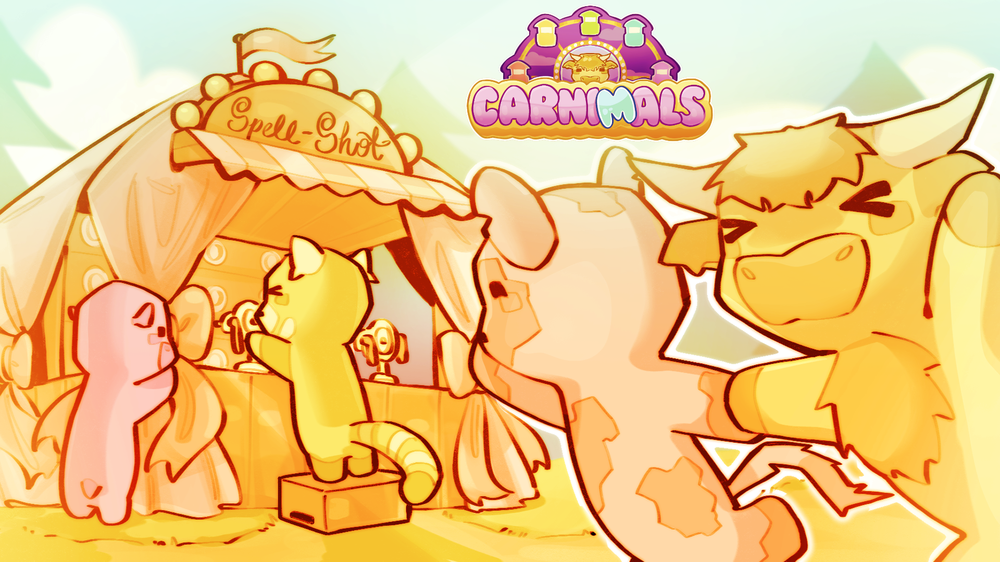

Misc Projects
Carnimals | 2026

Spelling game designed after carnival games, made on Unreal Engine.
Post Mortem is a horror-focused, Metroidvania-inspired game in which you play as a Detective investigating an abandoned mansion, utilising the power of possession to switch between past and present.
Locked doors were an essential part of the level design in our game which I implemented the functionality for.
Word5 | 2023
Wordle based gamed made for my Advanced Higher Computing project using Livecode.
Post Mortem is a horror-focused, Metroidvania-inspired game in which you play as a Detective investigating an abandoned mansion, utilising the power of possession to switch between past and present.
Locked doors were an essential part of the level design in our game which I implemented the functionality for.